Réaliser un site Web
Techniques de Commercialisation
Problèmes, erreurs, fautes d'orthographes à signaler
ici
Objectifs de ce cours, déroulement
et notation
Quel est l'objectif de ce cours ?
L'objectif de ce cours est de connaître, comprendre et
savoir utiliser les outils de conception de sites Web.
Combien de séances sont prévues ?
Deux.
Deux séances ? Mais ce TD a l'air assez long. Il va falloir
que je travaille entre deux séances ?
Oui. En effet, deux
séances de TD sont prévues, il vous appartient donc de réaliser
de façon autonome ce que vous n'auriez pas eu le temps de faire en
cours. En particulier entre les deux séances afin de pouvoir poser
des questions à votre enseignant.
Il paraît qu'il n'y aura pas de contrôle final, est-ce vrai ?
Oui. Vous serez notés sur la réalisation individuelle de
projets. En ce qui concerne plus particulièrement cette partie du
cours, vous devrez réaliser un site Web concernant une entreprise fictive.
Vous aurez une soutenance d'une dizaine de minute à réaliser en
salle machine devant un ou plusieurs des enseignants d'informatique.
La date et les modalités des soutenances vous seront données
ultérieurement.
Comment puis-je poser des questions en dehors des séances ?
Comme d'habitude, en envoyant un courrier électronique à
votre enseignant
Pourquoi me demander de ne pas imprimer ce
document ?
Parce que le document
évoluera certainement en fonction des erreurs, tournures
hasardeuses et des fautes d'orthographes ; parce qu'il
contient des liens hypertextes et que le papier ne permet pas encore
de suivre les liens hypertextes quoi qu'aujourd'hui,
il suffise d'un téléphone...
Une
page Web Simple
Au tournant des années 1990, Internet existe depuis déjà 20 ans
mais est encore principalement réservé aux militaires et aux
universitaires. Il offre pourtant déjà la plupart des services que
nous connaissons comme la messagerie électronique (mail), la
messagerie instantanée (chat), le transferts de fichiers
(ftp) mais leurs interfaces sont alors très sommaires voire
inexistantes. Un nouveau service, inventé au Centre Européen pour
la Recherche Nucléaire (CERN) à la frontière franco-Suisse par Tim
Berners-Lee, va révolutionner l'Internet et le démocratiser : le
Web.
Le Web est constitué de pages. Que sont ces pages ?
- Ouvrez le bloc note
- Recopiez le
texte suivant (retours à la ligne et tabulations inclus) :
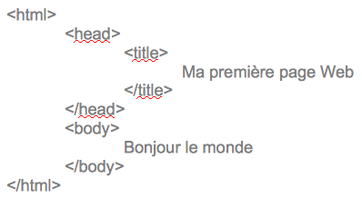
- Enregistrez
le document mais donnez l'extension .html au lieu de .txt
Appellez-le Bonjour.html
- Ouvrez-le avec le navigateur Web Mozilla Firefox. Vous devriez obtenir une page dont le titre est Ma première page Web
et qui affiche Bonjour le monde.
Vous venez de créer une page Web. Elle est écrite dans le langage
HTML (Hypertext Markup Language) qui est un langage de balisage
c'est-à-dire que, comme des parenthèses, si vous avez une balise
ouvrante (par exemple, <html>) vous avez une balise
fermante (ex : </html>).
- Identifiez
les différentes balises de Bonjour.html et dites à quoi elles correspondent.
À Retenir
Une page Web est simplement du texte brut écrit dans le langage HTML
qui va être interprété par un navigateur Web afin d'être affiché.
Les balises vont toujours par paires à une ouvrante correspond une
fermante, elles sont organisées en dernière ouverte première
fermée (équivalent à dernier entrant, premier sortant DEPS, LIFO).
Une page seule a peu d'intérêt alors
- créez-en une
seconde. Il faut que son nom soit différent de celui de la première
et que les deux soient dans le même répertoire. Pour gagner du
temps, vous pouvez copier le contenu de la première page dans un
nouveau fichier et ensuite le modifier.
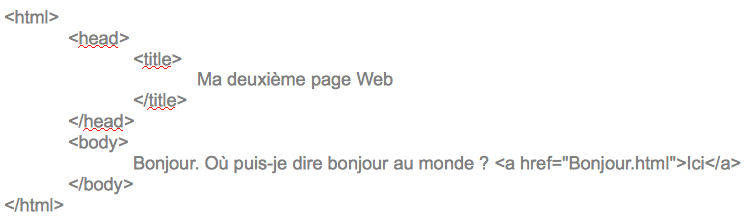
- Ouvrez cette
nouvelle page avec un navigateur. Observez le mot ici.
Cliquez dessus.
En savoir plus
En septembre 2018, les 5 navigateurs Web les plus utilisés sont
(source)
:
 Apple
Safari (pdm 10%)
Apple
Safari (pdm 10%)
 Mozilla
Firefox, libre, gratuit et multiplateforme (pdm 10%)
Mozilla
Firefox, libre, gratuit et multiplateforme (pdm 10%)
Google
Chrome (pdm 63%)
 Microsoft
Windows Internet Explorer 8 qui est actuellement
le plus mauvais et a été longtemps le plus utilisé des navigateurs (pdm 6,35% pic
à 95% en 2002-2003). Il est aujourd'hui remplacé par Edge (pdm 4%).
Microsoft
Windows Internet Explorer 8 qui est actuellement
le plus mauvais et a été longtemps le plus utilisé des navigateurs (pdm 6,35% pic
à 95% en 2002-2003). Il est aujourd'hui remplacé par Edge (pdm 4%).
Une répartition différente sur dispositif mobiles (source)
Google
Chrome (pdm 56%)
Apple
safari (pdm 18,63%)
Il s'agit d'un lien hypertexte (ou hyperlien) qui permet, ici de
passer d'une page à une autre. Il sont l'essence du Web et rendent
également possible le passage vers d'autres services comme le
courrier électronique ou le transfert de fichier par un simple clic
de souris. Ce sont eux, également, qui permettent l'affichage de
photos et autres ressources multimédias.
En savoir plus
Grâce
aux liens hypertextes, on va passer en un peu plus de 5 ans de 100
000 à 10 000 000 machines sur Internet. L'idée
ne vient pourtant pas du Web puisqu'elle date de...1945
pour la gestion des microfilms
Le langage HTML est relativement simple, il permet à un non
informaticien de réaliser une page Web. Il suffit de décrire le
contenu et la forme de la page.
- Reprenez
votre première page et modifiez là en mettant une balise B
autour de monde.
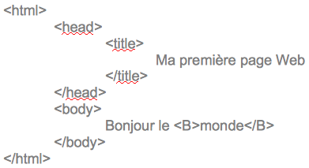
- À quoi sert
la balise <B> ?
Remplacez B par I (la lettre i).
À quoi sert la balise I
? Modifiez votre programme pour que le mot Bonjour
apparaisse en gras italique.
À retenir
<HEAD>: contient les
informations sur la page comme le titre par exemple
<BODY>: le corps de la
page, ce qui s'affiche dans la fenêtre
Même si la plupart des navigateurs
sont permissif, il vaut toujours mieux respecter les conventions et
une page Web doit avoir une
seule tête et un
seul corps.
En résumé, le squelette d'une page Web devrait être
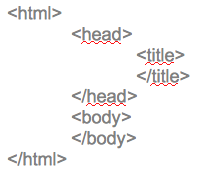
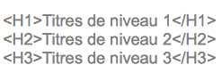
On peut définir des titres jusqu'au niveau 6. De même, les
paragraphes sont gérés avec la balise <p> (et bien sûr son pendant, </p>).
En savoir plus
La première page Web aurait été consultée le jour de Noël 1990.
Et voici à quoi ressemblait le premier navigateur qui fonctionnait
sur ordinateur NeXT
(l'ancêtre des ordinateurs actuels d'Apple)

Les balises ont parfois des attributs. Par exemple pour <a
href="Bonjour.html">, la balise <a> qui
définit les liens hypertextes a comme attribut href qui donne
la cible du lien
À retenir
La structure d'une balise ouvrante avec un attribut est de la forme :
<nomBalise attribut="valeur
attribut">
Il est possible d'avoir plusieurs attributs à la suite séparés par
des espaces
Par exemple, <a href="Bonjour.html" target="_BLANK">
signifie que pour la balise <a> l'attribut href a
la valeur Bonjour.html (la page cible) et l'attibut target
est la fenêtre cible (avec _BLANK, une nouvelle).
La structure d'une balise fermante est plus simple
Par exemple, </body>
On trouvera sur le site ici
une liste des balises et des attributs associés
Ces attributs permettent aussi de gérer l'apparence générale de la
page par exemple :
pour les caractères (<font>)
il est possible de modifier
la taille avec l'attribut size (exprimée en points pts ; par ex.
<font size = "5">) ;
la couleur avec l'attribut color
(noms en anglais ; par ex. <font color = "white">)
;
la police avec l'attribut face
(par ex. <font
face = "Comic Sans MS">)
Pour utiliser plusieurs attributs appartenant à une même balise comme <font>, on fait <font size = "5" face = "Comic Sans MS" color = "white"> texte</font>
La balise qui ferme n'a pas des attributs. Dans l'exemple précedent, </font> reste égal même s'il y a trois attributs
pour les paragraphes (<p>),
il est possible de modifier l'alignement avec align
(left, right,
center, justify;
par ex. <p align="left">)
pour le corps de la page Web
(<body>), la couleur du fond peut être modifiée grâce à
l'attribut bgcolor
(par ex. <body bgcolor="white">)
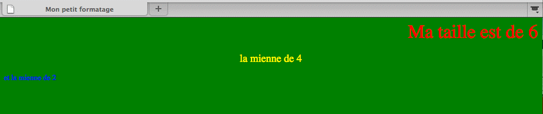
À retenir
HTML permet de décrire à la fois le contenu et l'apparence d'une
page Web
Lorsque l'on conçoit un site relativement grand, gérer des fichiers
textes et leur cohérence devient rapidement compliqué.
Allez sur
http://fr.wikipedia.org .
Allez
regarder le code source de la page (Clic droit>Code source de
la page)
Observez la
complexité du code mais essayez de repérer des balises déjà
connues.
Pour gérer de tels sites, dès le milieu des années 1990, des
outils encore plus simples à utiliser ont été mis en place même
si des notions de HTML restent encore indispensables à l'écriture
de sites Web.
À retenir
Pour être parfaitement lu par un navigateur, les lettres accentuées
et les symboles sont codés. Ce code commence toujours par une
esperluette (&) et
finit toujours par un point virgule (;).Par exemple, é pour
é et è pour è On
trouvera l'ensemble de ces symboles ici
À retenir
Il existe de nombreux tutoriaux en ligne sur le HTML, par exemple,
celui-ci.
Les
éditeurs de site Web WYSIWYG
Les logiciels WYSIWYG (What you see is what you get, vous obtenez ce
que vous voyez) sont les logiciels pour lesquels l'utilisateur voit
directement ce qu'il obtiendra : Writer ou Impress en
sont des exemples, vous pouvez voir, en même temps que vous la
réalisez votre présentation sous Impress ou votre mémoire
avec Writer.
En savoir plus
En ce qui concerne le Web, Adobe Dreamweaver, Microsoft
Expression Web, Apple iWeb en logiciels propriétaires et
Mozilla Compozer ou BlueGriffon en logiciel libres
permettent l'édition en WYSIWYG.
Writer permet également de réaliser de petits sites.
Avec LibreOffice Writer créez un document texte
Reproduisez la page Mon
petit formatage de la partie précédente.
Enregistrez le document au format HTML, ouvrez le avec un navigateur.
Regardez
le code HTML généré par writer (clic droit puis code source de la page)
Ce type de logiciel a toutefois quelques limites :
Il gère peu la cohérence graphique. Writer peut évidement
utiliser la notion de style mais ce n'est pas un standard du Web, si
vous rouvrez la page HTML avec une autre instance de Writer (un
Writer installé sur une autre machine par exemple), vous n'aurez
plus vos styles
Il faut gérer toute la partie envoi des fichiers sur le serveur
Les systèmes de gestion de contenu
Généralement appelés par leur accronyme anglais CMS (Content
Management System). Comme leur nom l'indique, les utilisateurs
n'ont qu'à gérer le contenu et ne se préoccupent pas du stockage
ni de la cohérence graphique. Pour un utilisateur lambda, il s'agit
d'un site Web pour lequel il peut créer et/ou éditer des pages.
Vous en utilisez un depuis que vous êtes à l'iut l'intratek.
En savoir plus
Il existe des milliers de CMS. Bien entendu tous n'ont pas les mêmes
fonctionnalités, la même simplicité, les mêmes usages le même
prix et ils ne sont pas tous très populaires. Le site
http://www.cmsmatrix.org/
permettait d'en tester plus de 1300 début septembre 2018.
Weebly
Weebly est l'un des nombreux CMS que l'on peut trouver sur le Web. Il
a deux principaux avantages, il offre un hébergement gratuit du site
et son utilisation WISIWYG est particulièrement poussée.
C'est avec ce CMS que vous devrez concevoir un site Web cette année.
Ici, nous allons réaliser un petit site Web sur le département
Techniques de Commercialisation.
Rappel : votre navigateur doit être Mozilla Firefox
- Allez
sur le site de Weebly et cliquez sur "S'inscrire" (coin en haut à droite de l'écran) (https://www.weebly.com/fr)
- Remplissez le formulaire
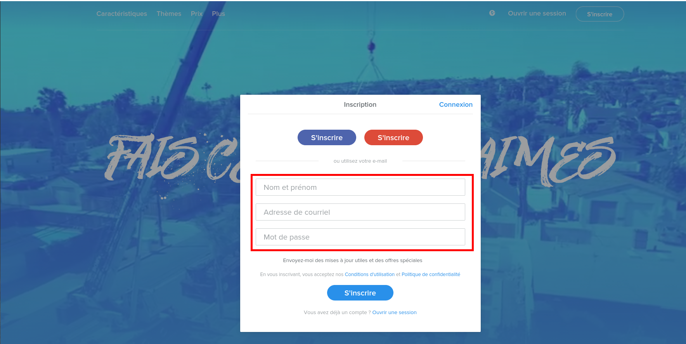
- Une fois la fenêtre "Quel genre de site souhaitez-vous créer ?", sélectionnez "J'ai juste besoin d'un site Web."
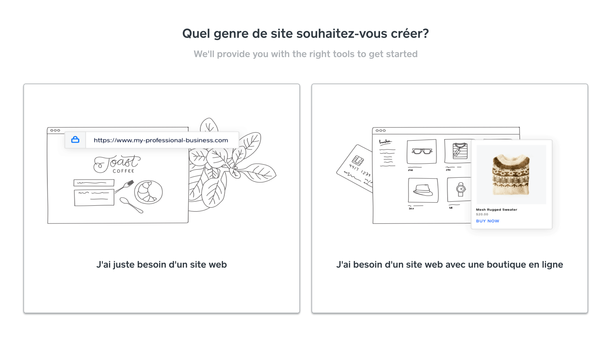
- Sélectionnez un modèle autre que "Sol de terrace" et après cliquer sur "Commencer l'édition"
- Choississez
un sous-domaine que vous nommerez tc suivi de votre nom de famille
et de votre prénom et de ".weebly.com". Choisir le sous-domaine gratuit proposé suite au clic sur le bouton rechercher.
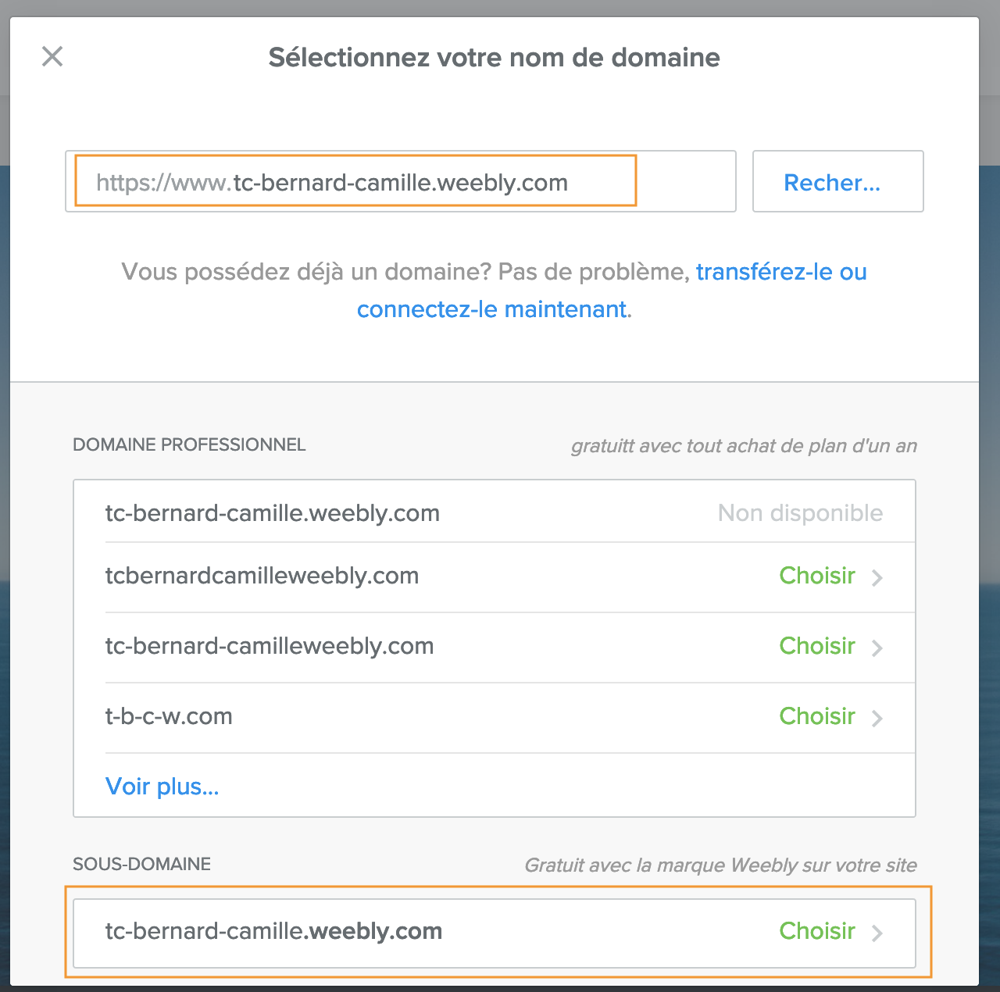
Vous êtes maintenant sur la page d'édition.
Donnez un titre à votre site (Site Web TC). C'est ici que vous
allez construire les pages de votre site. Weebly permet au créateur du site web de glisser-déposer des blocs contenant des fonctionnalités ou sections. Ainsi, il faudra que décider ce qu'on veut ajouter ainsi que son lieu sur la page. La plupart de modèles ont déjà un format prédefini (couleurs, polices, etc..). Toutefois, ils permettent de les modifier pour avoir un résultat plus personalisé. Par défault, elle travaille d'abord sur la page d'accueil, c'est à dire la première page que les personnes vont regarder. Pour modifier une autre, il faut aller sur l'onglet "Pages" (Menu supérieur), cliquer sur celle à éditer et cliquer encore une fois sur "Construire" (Menu supérieur) pour retourner sur l'espace d'édition.
Les options pour modifier le contenu du site se trouvent au côté gauche. Prenez un peu du temps pour les explorer
Nous allons créer ici un
petit site sur le département techniques de commercialisation.
Il faut définir l'ensemble des pages dont on aura besoin et leur
organisation
- Définissez
l’arborescence pour qu'elle soit identique à celle ci-dessous (carré rouge).
Ici, le site est composé de trois pages principales (accueil,
Première année, Deuxième année) et de six "sous-pages
(faire glisser les pages vers la droite pour en faire
dessous-pages).
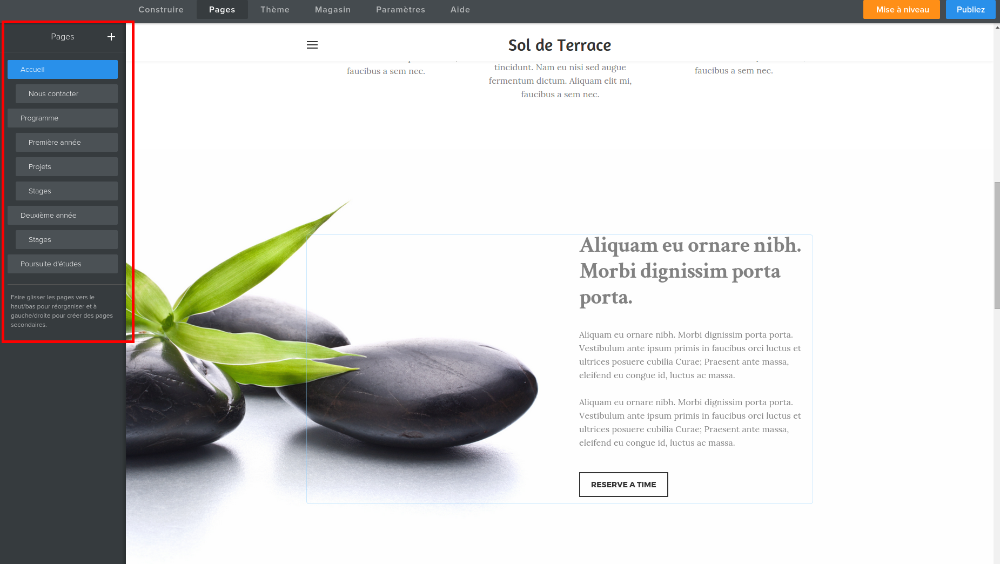
Il faut
maintenant mettre du contenu dans ces pages, éditer le site. Nous
commençons par la page d'accueil.
- Allez sur la
page d'accueil
- Le ménu à gauche vous permet de déposer des éléments sur
votre page (texte en colonnes, image…)
- Réalisez la page d'accueil suivante contenant les informations de l'image. Vous devez chercher le logo du Dépt. Tech de Co de l'IUT2 et de rajouter le lien hypertexte https://iut2.univ-grenoble-alpes.fr/ au mot "ici"
(site de l'IUT). Le formattage peut varier selon le modèle élu
- Vous
cliquerez sur « publier » (Coin supérieur droit) pour mettre votre site à
jour. Vous pouvez visiter le site et voir le résultat de vos modifications
Après la page d'accueil, nous passons à la sous-page « Nous
contacter » où nous allons mettre le formulaire suivant
- Insérer un
élément formulaire dans la page (Menu côté gauche > Basique >
> Formulaires de contact)
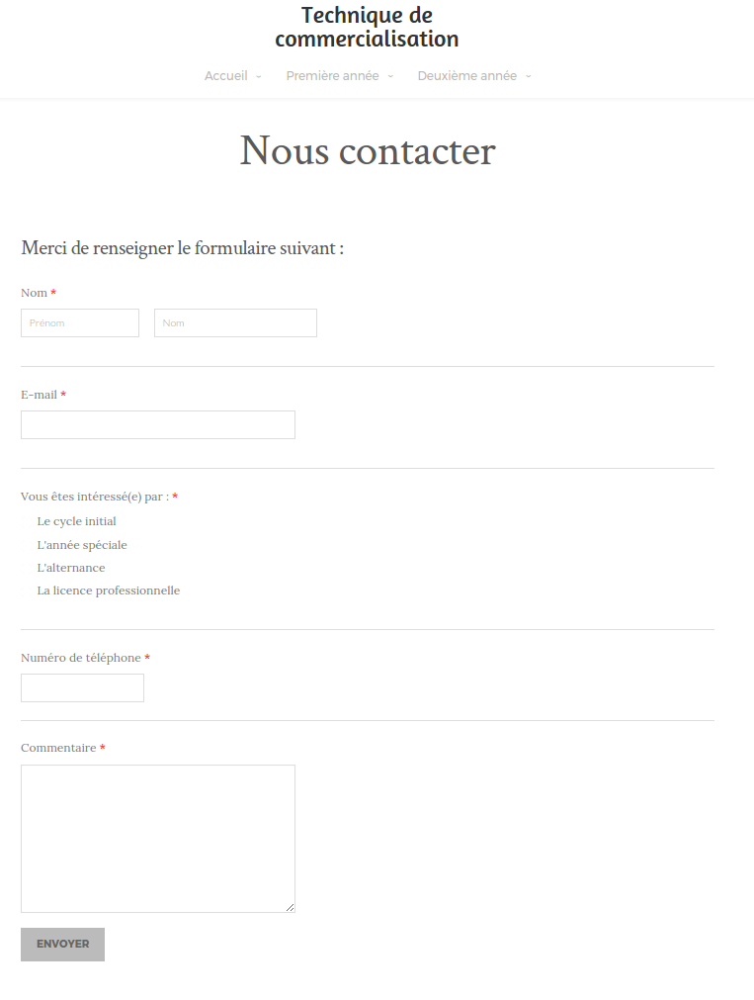
-
Vérifiez que le formulaire est envoyé à votre adresse (cliquer sur bouton
form options) et vous rajouterez « vous êtes intéressé(e)
par » en indiquant les différentes modalités (vous
utiliserez options boutons
-
Dans les autres pages insérez des galeries de photo, des vidéos,
des sondages en ligne en formulant des questions avec des cases à
cocher et des boutons d’options, des mots croisés
Les CSS
Dès 1994, il est devenu clair que maintenir l'identité graphique
d'un site Web était compliqué. Imaginez le reponsable du site Web
d'un journal devoir systématiquement insérer le titre du journal,
régler les couleurs, la taille des titres et du texte.
- Dans Weebly, changez de thème
- Qu'observez-vous ?
Le contenu n'a pas été modifié alors que la charte graphique
est complètement différente.
Comment expliquer cette possibilité alors que nous avons vu que
le HTML permet
de décrire à la fois le contenu et l'apparence d'une page Web ?
Simplement en enlevant du code HTML les informations du formatage.
Ainsi sont nées les CSS (Cascading Style Sheets : Feuilles de style
en cascade)
À retenir
Les CSS jouent un rôle équivalent au masque d'une présentation et
aux styles d'un traitement de texte.
Au HTML le soin de gérer le contenu , le fond
Au CSS le soin de gérer le formatage, la forme
-
Laissez de côté Weebly et revenez dans le système de fichier de
votre ordinateur.
- Créez un répertoire (un dossier) appelé test-CSS.
- Enregistrez ce
fichier dans le
répertoire puis ouvrez-le avec le bloc-note.
-
Ouvrez ce fichier avec votre navigateur, lisez le poème, observez
sa forme
- Dans
le répertoire où vous avez téléchargé ce fichier, créez un
second fichier, appelez-le style.css et
recopiez
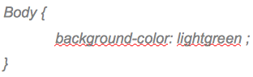
Maintenant, nous allons indiquer dans
le fichier HTML (test-CSS.html) où aller chercher la feuille de
style
- Dans la tête du fichier HTML,
insérez
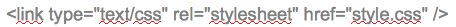
- Visualisez le résultat dans votre
navigateur, observez sa forme. Quelle est la différence ?
Pourquoi ? Analysons ce que nous
avons écrit dans le fichier CSS : body est
l'élément HTML que l'on souhaite formater et entre les accolades
background-color, la
couleur du fond qui sera donc vert clair.
À retenir
Les éléments d'un fichier CSS ont la syntaxe suivante :
sélecteur
{
propriété1
: valeur1;
propriété2:
valeur2;
...
propriétéN
: valeurN;
}
selecteur :
la balise HTML à laquelle on souhaite appliquer la propriété
propriété
: la propriété
valeur
: la valeur que l'on souhaite donner à la propriété
On trouve facilement sur le Web la liste des
propriétés et des valeurs (par exemple
le site OpenClassrooms ou le site spécialisé css-faciles)
Vous modifierez le fichier CSS (et
uniquement ce fichier) pour obtenir la présentation suivante. Il
vous sera nécessaire de rechercher dans le lien précédant les
propriétés et valeurs associées nécessaires.
En sachant que
- le titre H1
est écrit en Arial, en gras, centré
et dans la plus grande taille de police
- le titre H2 est écrit en Arial, centré, les caractères sont en petites capitales
et en taille de police moyenne
- le reste du texte est écrit en Arial, italique,centré, et en taille de police petite et l'espace entre deux paragraphes vaut une demi-taille de ligne (line-height: 50%).
- le body de la page est "SkyBlue"
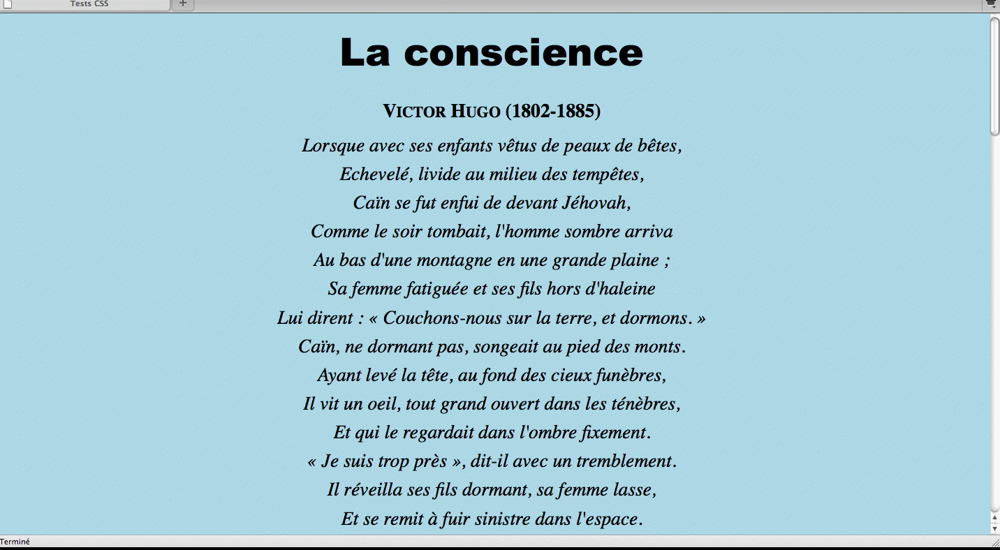
En savoir plus
L'idée des CSS date de 1994, leurs
premières spécifications officielles datent de 1996-1998 mais il
faut attendre 2006 pour qu'Internet Explorer (qui
équipe alors environ 90% des machines) ne sache les interpréter
correctement.
- Rajouter à gauche la photo de
Victor Hugo que l'on trouve sur le site de Wikipedia. Elle doit
rester au même endroit de la fenêtre même si on fait défiler le
poème.
Les CSS dans Weebly
Weebly nous offre une bonne centaine
de masques différents ce qui est largement suffisant pour une
utilisation personnelle simple mais insuffisant pour une utilisation
professionnelle. En effet, le site Web d'une entreprise doit
refléter son identité graphique. Il va ainsi falloir que nous
modifions les CSS de notre site pour obtenir le résultat attendu.
- Revenez sur le site que vous avez crée
- En mode édition
du site, cliquez sur l'onglet Thème
- Cliquez sur
Editer HTML/CSS
- Modifiez
la CSS de telle sorte que l'image que l'on trouve ici
se répète dans le fond de la page.
En savoir plus
De nos jours, il existe une grande variété d'écrans (des
téléphones portable aux très grands écrans d'ordinateur) sur
lesquels on peut visualiser les pages Web. Leur définition est
exprimée en pixels qui sont les points sur l'écran qui affichent
une couleur.
La
taille de l'écran (c-à-d. la longueur de sa diagonale) est
exprimée, elle, en pouces (1 pouce (1") = 2,54cm), et n'est pas
nécessairement en rapport avec le nombre de pixels d'un écran.
Ainsi, les écrans des téléphones portables les plus récents ont
bien plus de pixel qu'une télévision à tube
cathodique :
En savoir plus
Le W3C (World
Wide Web Consortium),
créé en 1994 par Tim Berner-Lee est l'organisme chargé de définir
les standards du Web (HTML, CSS, XML,
SVG,...).
Ces standards sont dits libres (ou ouverts )
c'est-à-dire que leurs spécifications techniques sont publiques et
sans restriction d'accès ni de mise en œuvre.
Certains formats dits propriétaires (ou fermés)
pourtant très utilisés ne font pas partie des standards
du Web.
Dans ce cas, pour pouvoir fabriquer un logiciel capable de les lire,
il faut payer une redevance. C'est le cas des fichiers zip
ou du Flash
par exemple. C'est d'ailleurs pourquoi il est contesté par les promoteurs de l'informatique libre (voir la position de l'April). C'est également une des raisons avancée par Apple qui refuse de permettre son installation sur ses terminaux mobiles.
Webographie
Internet
http://fr.wikipedia.org/wiki/Internet
Histoire d'Internet
http://fr.wikipedia.org/wiki/Histoire_d'Internet
Le Web
http://fr.wikipedia.org/wiki/World_Wide_Web
L'informatique au CERN
http://fr.wikipedia.org/wiki/Organisation_européenne_pour_la_recherche_nucléaire#Informatique_au_CERN
Comparatif navigateurs : qui est le
meilleur ?
http://www.clubic.com/article-282232-1-comparatif-internet-explorer-firefox-opera-safari.html
Part de marché des navigateurs
http://gs.statcounter.com/
Le langage HTML
http://fr.wikipedia.org/wiki/Hypertext_Markup_Language
Tutorial sur le HTML
http://fr.html.net/tutorials/html/
Les couleurs du Web
http://fr.wikipedia.org/wiki/Couleurs_du_Web
Les attributs en HTML
http://fr.selfhtml.org/html/reference/attributs.htm
Les systèmes de gestion de contenu
Les feuilles de style en cascade
(css) http://fr.selfhtml.org/css/
Tutoriel CSS
http://fr.html.net/tutorials/css/
Liste des propriétés CSS
http://www.siteduzero.com/tutoriel-3-13639-liste-des-proprietes-css.html
Faits marquants css (en anglais)
http://webilus.fr/illustration/histoire-et-faits-marquants-sur-les-css
Interview sur la création des css
et le W3C
http://www.gralon.net/articles/internet-et-webmaster/creation-site-internet/article-interview-de-bert-bos---histoire-et-evolutions-du-css-988.htm
Site Web du W3C http://www.w3.org/
CSS zen garden : le même site à travers un certain nombre d'exemple de css http://www.csszengarden.com